上も中も下も好き [梅吉]
紙袋から中のものを取り出すと
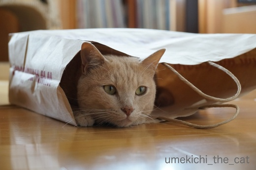
もれなく入ります。
キャットトンネルを商品化した人はこの辺りからヒントを得たのでしょうか。
新聞を読んでいるとどっかり上に座るので広告をひらひらすると
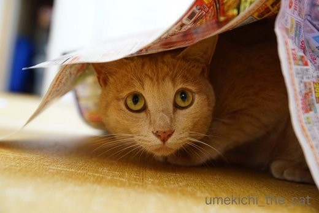
すばやく下に潜り込みます。しかもとっても嬉しそう＾＾
顔がわくわくしてますよw
梅吉に限らずとにかく猫は何かの上、中、下が大好きですよねー。
覆われている様な感覚が良いのでしょうか。
（上に乗るのは猫様だからw）

おかーさんの足元も大好きです。
梅吉さんを覆うほど大きくも幅広でもないんですけどwww
我が家のキッチンは狭いので動線はワンライン。
そこに座られるととっても動きにくいのでどけてもらえませんか？

![[猫]](https://blog.ss-blog.jp/_images_e/101.gif) いやや ことわる
いやや ことわる
そんなこと言う子は
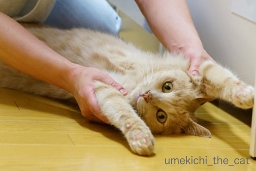
ばんにゃーーーい！！！
お腹に顔を押し付けてもふもふもしちゃいましたＯ(≧▽≦)Ｏ
この時期、もふった後は顔が毛だらけになっていつまでもムズムズして落ち着きませんが
どうしてもやめられませんwww
 ↑ガブッと一押し↑
↑ガブッと一押し↑
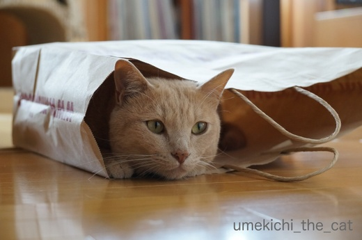
もれなく入ります。
キャットトンネルを商品化した人はこの辺りからヒントを得たのでしょうか。
新聞を読んでいるとどっかり上に座るので広告をひらひらすると
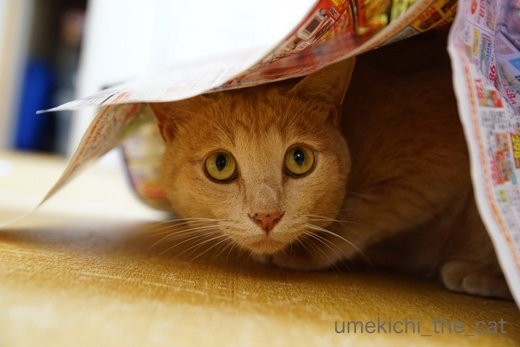
すばやく下に潜り込みます。しかもとっても嬉しそう＾＾
顔がわくわくしてますよw
梅吉に限らずとにかく猫は何かの上、中、下が大好きですよねー。
覆われている様な感覚が良いのでしょうか。
（上に乗るのは猫様だからw）

おかーさんの足元も大好きです。
梅吉さんを覆うほど大きくも幅広でもないんですけどwww
我が家のキッチンは狭いので動線はワンライン。
そこに座られるととっても動きにくいのでどけてもらえませんか？

そんなこと言う子は
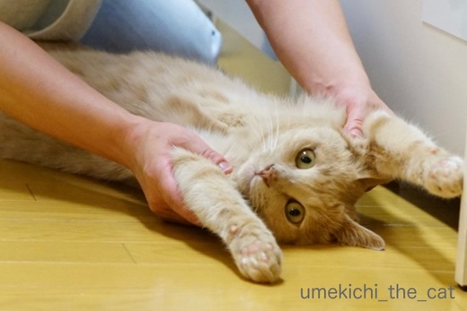
ばんにゃーーーい！！！
お腹に顔を押し付けてもふもふもしちゃいましたＯ(≧▽≦)Ｏ
この時期、もふった後は顔が毛だらけになっていつまでもムズムズして落ち着きませんが
どうしてもやめられませんwww
続くブラッシング（コーミング！？） [梅吉]
今日は朝から良い天気ですねー＾＾
まるで梅雨が明けたかの様。
大阪は真夏特有のスモッグがかかった様な鈍い青空が広がっています。
梅雨も終盤のこの頃、梅吉さんの換毛期も終わりを迎えている様です。
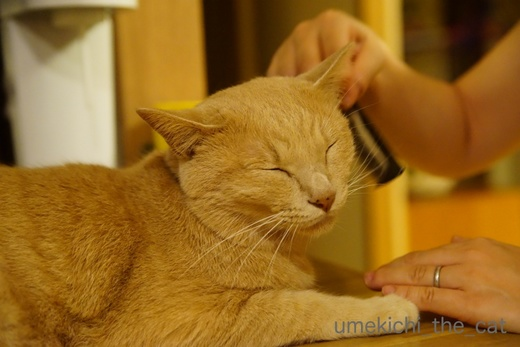
クシの感触を忘れてしまわない様に抜け毛は減ってもお手入れは続行中。

減ったと言っても結構抜けますw
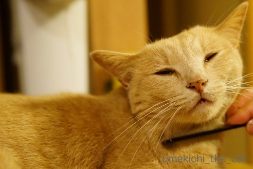
それに逆鱗ポイントのおしっぽじゃなければ
気持ち良いんですよねー＾＾

おっきなあくびだねー(≧▽≦)

舌の先っちょがハートみたいになってます♡
（クリックで拡大します）
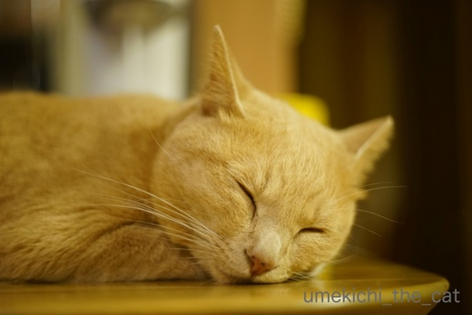
すっかりリラックスしてくれた様でしたv
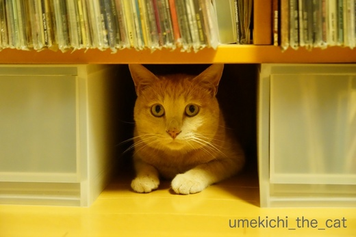
遊び気分の時の秘密基地。
本気で怖い時はここには入りません。
ここに入る時はじゃらしとおとーさんの足を狙う時w
梅吉も日常を取り戻した様です＾＾
トンネルも良いけどたまにはビニール [梅吉]
単体では喜ばなくなってしまった「毛深いヨロコブラ」。
トンネルは酷使しているので今日はビニールと組み合わせて遊びましょう！

遊びの効果を高めるのと息苦しくならない様に（被せただけだから心配は無いのですが一応）
ビニールに切れ目を入れておくのもポイントです＾＾
捕まえられそうで出来ないのが楽しい様ですw
ヨロコブラを振り上げたら目線が追って可愛いお顔に！！
あ〜、ビニール無しで撮りたい表情でしたw
ビニール絡ませ遊びが楽しかったのか
最近は見向きもしなかったエビちゃんをガブケリ。

梅雨の合間に [梅吉]
昨夜は服や靴、キャリー、避難用具を枕元に置いて寝たのですが・・・
それらが気になってしょうがない梅吉さんw
靴をガブガブキャリーをゴソゴソ。やかましいったらありゃしないw
一通りチェックを終るとようやくお休みになりましたけど![[ダッシュ（走り出すさま）]](https://blog.ss-blog.jp/_images_e/164.gif)
我が家地方は余震もなく静かな夜を過ごせました。
そうそう！おっとのことに一言も触れてませんでしたが
昨日はたまたま有給で家にいたのです＾＾
出社してても仕事にならなかったかな、と。
タイミングの良いことでした。
･゜ﾟ･*:.｡..｡.:*･゜ﾟ･*:.｡. .｡.:*･゜ﾟ･*･゜ﾟ･*:.｡..｡.:*･゜ﾟ･*:.｡..｡.:*･゜ﾟ･* ･゜ﾟ･*:.｡..｡.:*･゜ﾟ･
梅雨入りはしましたが晴れている日も多い我が家地方。
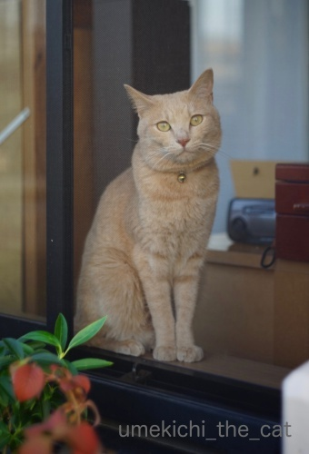
わし おそとにいく
梅吉さんはベランダに出たくてしょうがありません＾＾
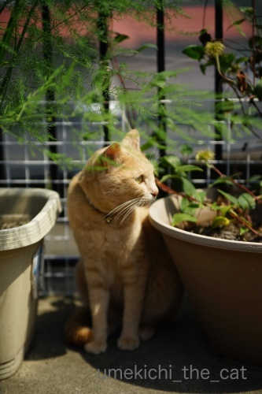
ぼーぼーに茂ったアスパラの鉢とクレマチスの鉢をチェック。
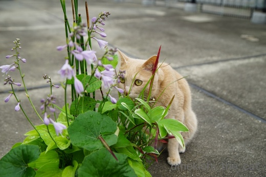
これまた色々茂った寄せ植えもチェック。
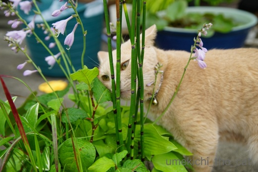
お鼻、くっつけ過ぎ。
トクサだから今度はお鼻が「擦れ擦れ」になっちゃいますよ。
とにかくベランダに出るといろんなものの匂いを嗅ぎまくり。
家の中とは違う自然の香り楽しいのかな？
ところで、トクサ、触ったことあるでしょうか。
硬い細かな筋が走っていて手をこすると擦り傷が出来そう。
一部の工芸品の仕上げやクラリネットのリードは紙やすりではなくトクサで調整するそうです。

慌てて植えた枝豆の種、１週間でこんなに成長しています。
この時期ベランダの植物たちはあっと言う間にぼーぼーです(⌒_⌒;

３年前に植えた夏椿、別名シャラノキ。
去年は花付きが良くなかったのですが今年はたくさん咲きました！やったー！！
花は咲くと１日で落ちてしまいます。
椿なのでぼとぼと落花して掃除が大変でもあるのですが
10日間くらいの間目を楽しませてくれました＾＾
↑ガブッと一押し↑
それらが気になってしょうがない梅吉さんw
靴をガブガブキャリーをゴソゴソ。やかましいったらありゃしないw
一通りチェックを終るとようやくお休みになりましたけど
我が家地方は余震もなく静かな夜を過ごせました。
そうそう！おっとのことに一言も触れてませんでしたが
昨日はたまたま有給で家にいたのです＾＾
出社してても仕事にならなかったかな、と。
タイミングの良いことでした。
･゜ﾟ･*:.｡..｡.:*･゜ﾟ･*:.｡. .｡.:*･゜ﾟ･*･゜ﾟ･*:.｡..｡.:*･゜ﾟ･*:.｡..｡.:*･゜ﾟ･* ･゜ﾟ･*:.｡..｡.:*･゜ﾟ･
梅雨入りはしましたが晴れている日も多い我が家地方。
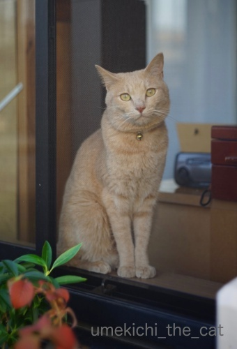
梅吉さんはベランダに出たくてしょうがありません＾＾
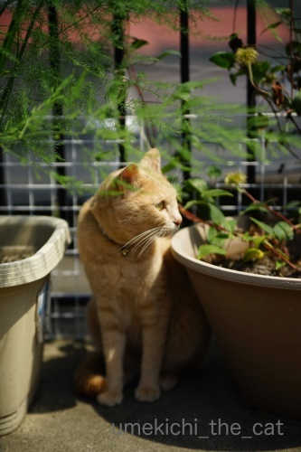
ぼーぼーに茂ったアスパラの鉢とクレマチスの鉢をチェック。
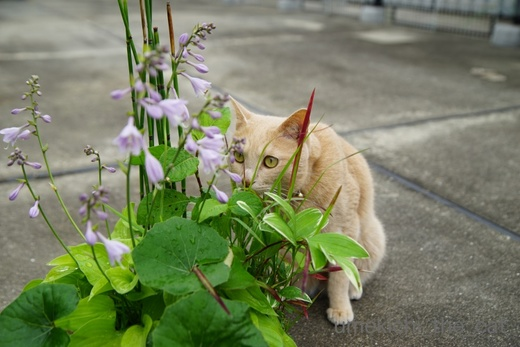
これまた色々茂った寄せ植えもチェック。
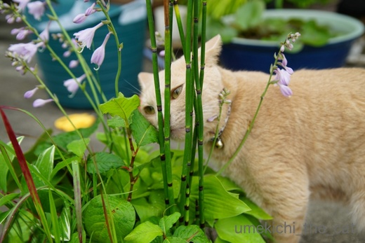
お鼻、くっつけ過ぎ。
トクサだから今度はお鼻が「擦れ擦れ」になっちゃいますよ。
とにかくベランダに出るといろんなものの匂いを嗅ぎまくり。
家の中とは違う自然の香り楽しいのかな？
ところで、トクサ、触ったことあるでしょうか。
硬い細かな筋が走っていて手をこすると擦り傷が出来そう。
一部の工芸品の仕上げやクラリネットのリードは紙やすりではなくトクサで調整するそうです。

慌てて植えた枝豆の種、１週間でこんなに成長しています。
この時期ベランダの植物たちはあっと言う間にぼーぼーです(⌒_⌒;

３年前に植えた夏椿、別名シャラノキ。
去年は花付きが良くなかったのですが今年はたくさん咲きました！やったー！！
花は咲くと１日で落ちてしまいます。
椿なのでぼとぼと落花して掃除が大変でもあるのですが
10日間くらいの間目を楽しませてくれました＾＾
６月１８日、今朝の地震のこと [梅吉]
今朝７時５８分に起きた地震、我が家の付近は震度４。
震度４もあったかな？が私の体感です（鈍いのか？）
梅吉の飲み水がこぼれたくらいで被害はありませんでした。
大阪府の北部、箕面、枚方、茨木、高槻など震源地に近いところでは
亡くなられた方のニュースも入ってきています。
これ以上の悲しいニュースがない事を祈るばかりです。
停電・断水にもなっているので少しでも早く復旧しますように。
地震の瞬間梅吉は冷蔵庫の上で寝ていたのですが
揺れ始めると転がるように降りてきました。
リビングの真ん中で「なにがおきてるんや？」という顔をしたのちダッシュ。
梅吉を抱えてダイニングテーブルの下に潜り込もうと思っていたのですが
捕まえられそうもなかったので梅吉のあとを追って寝室に。
ベッド下に隠れた梅吉を引っ張り出して
一緒にウォークインクローゼットに避難しようとした時には揺れは収まっていました。
地震が起きた瞬間私はキャリーのすぐそばにいたのですが
キャリーのことなんてまるで頭に浮かんでこなくて・・・
常々「地震が起きたらキャリーをひっつかんで梅吉を入れる」と
思っていたのですがいざとなると出来ないものです。反省。。。
この経験を生かして次はきっと大丈夫、なはず。
わし きょうもびっくりしたで （地震発生後30分くらいの写真です）
雷やら地震やら、この頃怖い思いの多い梅吉です。
今現在はすっかり落ち着いて爆睡中です＾＾
余震が考えられるのでしばらくの間枕元にはキャリーと靴、靴下
薄着のパジャマの時期なので何か羽織れるものを用意しておこうと思っています。
コメント欄でSNSでメールで「大丈夫？」と心配してくださった皆様、
ブログで安否確認できて良かったと思ってくださった皆様
改めてましてありがとうございましたm(_ _)m
今日アップする予定だった記事は明日アップしますね＾＾
今日はコメント欄閉じておきます。
震度４もあったかな？が私の体感です（鈍いのか？）
梅吉の飲み水がこぼれたくらいで被害はありませんでした。
大阪府の北部、箕面、枚方、茨木、高槻など震源地に近いところでは
亡くなられた方のニュースも入ってきています。
これ以上の悲しいニュースがない事を祈るばかりです。
停電・断水にもなっているので少しでも早く復旧しますように。
地震の瞬間梅吉は冷蔵庫の上で寝ていたのですが
揺れ始めると転がるように降りてきました。
リビングの真ん中で「なにがおきてるんや？」という顔をしたのちダッシュ。
梅吉を抱えてダイニングテーブルの下に潜り込もうと思っていたのですが
捕まえられそうもなかったので梅吉のあとを追って寝室に。
ベッド下に隠れた梅吉を引っ張り出して
一緒にウォークインクローゼットに避難しようとした時には揺れは収まっていました。
地震が起きた瞬間私はキャリーのすぐそばにいたのですが
キャリーのことなんてまるで頭に浮かんでこなくて・・・
常々「地震が起きたらキャリーをひっつかんで梅吉を入れる」と
思っていたのですがいざとなると出来ないものです。反省。。。
この経験を生かして次はきっと大丈夫、なはず。
雷やら地震やら、この頃怖い思いの多い梅吉です。
今現在はすっかり落ち着いて爆睡中です＾＾
余震が考えられるのでしばらくの間枕元にはキャリーと靴、靴下
薄着のパジャマの時期なので何か羽織れるものを用意しておこうと思っています。
コメント欄でSNSでメールで「大丈夫？」と心配してくださった皆様、
ブログで安否確認できて良かったと思ってくださった皆様
改めてましてありがとうございましたm(_ _)m
今日アップする予定だった記事は明日アップしますね＾＾
今日はコメント欄閉じておきます。
タグ：地震
地震報告 [梅吉]
続くトンネルブームとお鼻にじにじ [梅吉]
梅吉さんのトンネルブームは続行中です。

横穴からのぞいて見る。
ん？お顔になにか違和感が・・・・・

お鼻の上の方が濡れています。お鼻にじにじ！！
最近、気温＆湿度が上昇して不快指数の高い日にこうなっちゃうんですよねー。
寝ている時以外で鼻が乾いているのは不調の証拠ですが
濡れすぎているのも問題が？と調べて見ると猫風邪の可能性もあるので注意、と。
でもいつも通り食欲もあるし元気いっぱい遊びます。体調不良ではない。
なにより猫風邪は鼻水だけど、梅吉のこれは鼻水ではない感じ。
午前中雨が降ってお鼻がにじにじに（にじんでも）なっても午後晴れて湿度が下がると治っています。
飼い主の結論としては「梅吉は鼻にも汗をかく」です。
歴代飼っていたにゃんこのお鼻の周りの被毛の色は白と濃いグレー（黒に近い）。
汗がにじんでも目立たない色だったかな。
第一飼っていたのは梅雨なんてない札幌で、にじむこと自体がなかったと思われますw
白・黒はにじんでも目立たなさそうですが
梅吉と同じような被毛の色、茶トラ系のにゃんこを飼われている方（もちろんそれ以外でも）
不快指数の高い日はお鼻の上がにじんでいませんか？
にゃんこにも体質があるので同じようになるわけではないと思いますけれど。

なんや かっこわるいわぁ・・・
コアラのお鼻みたいでかわいいですよ（*>艸<)
で数時間後にはいつものお鼻でトンネルにイン！

どったんばったんしていたのに急に静かになった。のぞくとお得意のポーズでまったり。
わしここ むっちゃすっきやー

おちつくんやで・・・・・
↑ガブッと一押し↑

横穴からのぞいて見る。
ん？お顔になにか違和感が・・・・・

お鼻の上の方が濡れています。お鼻にじにじ！！
最近、気温＆湿度が上昇して不快指数の高い日にこうなっちゃうんですよねー。
寝ている時以外で鼻が乾いているのは不調の証拠ですが
濡れすぎているのも問題が？と調べて見ると猫風邪の可能性もあるので注意、と。
でもいつも通り食欲もあるし元気いっぱい遊びます。体調不良ではない。
なにより猫風邪は鼻水だけど、梅吉のこれは鼻水ではない感じ。
午前中雨が降ってお鼻がにじにじに（にじんでも）なっても午後晴れて湿度が下がると治っています。
飼い主の結論としては「梅吉は鼻にも汗をかく」です。
歴代飼っていたにゃんこのお鼻の周りの被毛の色は白と濃いグレー（黒に近い）。
汗がにじんでも目立たない色だったかな。
第一飼っていたのは梅雨なんてない札幌で、にじむこと自体がなかったと思われますw
白・黒はにじんでも目立たなさそうですが
梅吉と同じような被毛の色、茶トラ系のにゃんこを飼われている方（もちろんそれ以外でも）
不快指数の高い日はお鼻の上がにじんでいませんか？
にゃんこにも体質があるので同じようになるわけではないと思いますけれど。

コアラのお鼻みたいでかわいいですよ（*>艸<)
で数時間後にはいつものお鼻でトンネルにイン！

どったんばったんしていたのに急に静かになった。のぞくとお得意のポーズでまったり。

びびりん坊 [梅吉]
８日（金）の夜、我が家地方では短時間でしたが激しい雨と雷が。

雨粒が窓ガラスを叩いています。
平常心のように見える梅吉さんですがイカ耳w

ピカッ![[雷]](https://blog.ss-blog.jp/_images_e/5.gif) と光ると上体を起こす。イカ耳度が増しましたよww
と光ると上体を起こす。イカ耳度が増しましたよww
バリバリバリッと音がすると動揺を隠せなくなりましたwww
イカ耳度MAX！

とりあえずテレビ横の狭いスペースに潜んでみる。
あかん ばりばりおばけに おそわれるかもしれへん・・・・・
この後は隠れる場所を探して人間のベッドの下、クローゼットの中、押入れ等
家の中をウロウロウロウロ挙動不審・・・・・
遠くでゴロゴロ程度のものはありましたけどこれほど近い距離で大音響の雷が鳴ったのは
梅吉が我が家に来た３年前以来かな。
幼い梅吉はすっとんでテレビ下の隙間に隠れました。
今はその隙間には入れません( ´艸｀)
夜寝る頃には挙動不審もかなり落ち着きましたが
蒸し暑いのにぴとーっと体を寄せて来て寝苦しかったです(^▽^;)
恐ろしい瞬間にこそ頼って欲しいのですが・・・
でもその前に、お家の中で恐ろしい目にあったことなんて無いでしょ。
翌土曜日の午前中もなんとなく挙動不審でずーっと私の後を付いて回っていましたw
びびりん坊(*>艸<)
梅吉3歳、人間だと28歳くらいのようですがまだまだ坊主、小僧という形容がぴったりです。
お昼過ぎ、やっと雷の恐怖体験から抜け出してお昼寝。
腑抜けた顔してお昼寝できる安心と幸せをかみしめてくださいよー。
↑ガブッと一押し↑

雨粒が窓ガラスを叩いています。
平常心のように見える梅吉さんですがイカ耳w

ピカッ
バリバリバリッと音がすると動揺を隠せなくなりましたwww
イカ耳度MAX！

とりあえずテレビ横の狭いスペースに潜んでみる。
この後は隠れる場所を探して人間のベッドの下、クローゼットの中、押入れ等
家の中をウロウロウロウロ挙動不審・・・・・
遠くでゴロゴロ程度のものはありましたけどこれほど近い距離で大音響の雷が鳴ったのは
梅吉が我が家に来た３年前以来かな。
幼い梅吉はすっとんでテレビ下の隙間に隠れました。
今はその隙間には入れません( ´艸｀)
夜寝る頃には挙動不審もかなり落ち着きましたが
蒸し暑いのにぴとーっと体を寄せて来て寝苦しかったです(^▽^;)
恐ろしい瞬間にこそ頼って欲しいのですが・・・
でもその前に、お家の中で恐ろしい目にあったことなんて無いでしょ。
翌土曜日の午前中もなんとなく挙動不審でずーっと私の後を付いて回っていましたw
びびりん坊(*>艸<)
梅吉3歳、人間だと28歳くらいのようですがまだまだ坊主、小僧という形容がぴったりです。
お昼過ぎ、やっと雷の恐怖体験から抜け出してお昼寝。
腑抜けた顔してお昼寝できる安心と幸せをかみしめてくださいよー。
旅姿☆あざらしくん [梅吉]
関西は昨日梅雨入り。蒸し蒸しして来ました。
ここはひとつ梅吉さんには涼しげに海獣さんになっていただきましょう＾＾
おとーさんが嬉しそうに買って来ましたよ。
かぶってマリンあにまる あざらしくん ですってーＯ(≧▽≦)Ｏ

ささ、被ってみましょう！
まあ、そう迷惑そうな顔をせずに、ね？
急いで被せたので後ろに背負って目が釣り上がっちゃいました。
決して怒っているわけではないと・・・

これでどうでしょうか。
似合う似合わないは別にしてあざらし感は１ミリもありません(^▽^;)
おかーさんは江戸時代の道中手拭い（道中手拭いって何の方？八兵衛が被っているこれ）を被った
旅人に見えるのですが・・・
そうそう！いいねー(๑˃̵ᴗ˂̵)و
なにわっこだけど鯔背だねー！！！
↑ガブッと一押し↑
ここはひとつ梅吉さんには涼しげに海獣さんになっていただきましょう＾＾
おとーさんが嬉しそうに買って来ましたよ。
かぶってマリンあにまる あざらしくん ですってーＯ(≧▽≦)Ｏ

ささ、被ってみましょう！
まあ、そう迷惑そうな顔をせずに、ね？
急いで被せたので後ろに背負って目が釣り上がっちゃいました。
決して怒っているわけではないと・・・

これでどうでしょうか。
似合う似合わないは別にしてあざらし感は１ミリもありません(^▽^;)
おかーさんは江戸時代の道中手拭い（道中手拭いって何の方？八兵衛が被っているこれ）を被った
旅人に見えるのですが・・・
そうそう！いいねー(๑˃̵ᴗ˂̵)و
なにわっこだけど鯔背だねー！！！
梅吉、トンネルに入り浸る [梅吉]
某サイトのポイントの有効期限が迫っていたのでキャットトンネルを買いました。
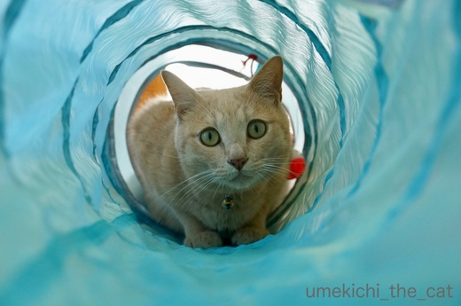
開封して広げた途端にズバン！と飛び込むカフェオレ色。
梅吉さんの辞書には『警戒』とか『躊躇』という文字は無いのですねー。

トンネルにくっ付いているおもちゃには興味を示さないので
シャカシャカする生地越しにじゃらしを動かすと
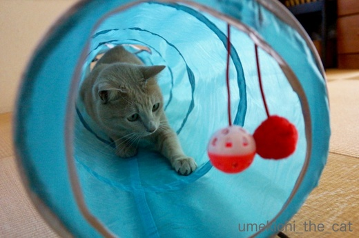
大喜びＯ(≧▽≦)Ｏ
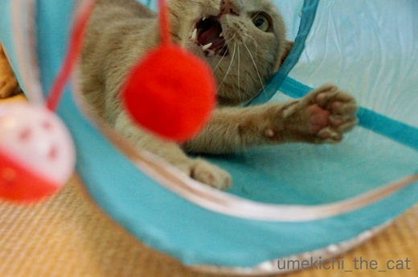
盛り上がり過ぎ(*>艸<)

トンネルの横穴も

めっちゃウケてますw

遊び疲れたらトンネルの中でまったり。
ティピーにしようか迷ったのですがやんちゃな梅吉にはトンネルだわ！
との読みが大的中でした＾＾
買ってから10日くらい経つのですが毎日ハードに使っているので
シャカシャカする薄い生地は爪痕でボツボツ穴が空いております。
破れるのも時間の問題かもしれませんwww
貯まったポイントはつい梅吉のグッズを買ってしまいます。
必要な日用品はいくらでもあるのに、なぜだー！
みなさんはポイントはどう利用していますか？

カフェオレ色の梅吉

梅吉 2023年8月10日 永眠


梅吉と出会った譲渡会

犬猫の理由なき殺処分ゼロ
妄想広告
UMEKICHI 光

爆発的に早い！
時々攻撃的！
Thanks to Mr.Boss365
爆発的に早い！
時々攻撃的！
Thanks to Mr.Boss365